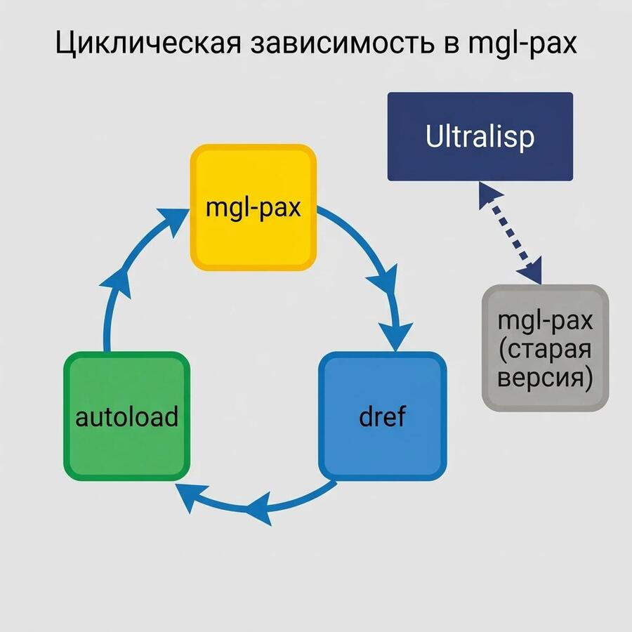
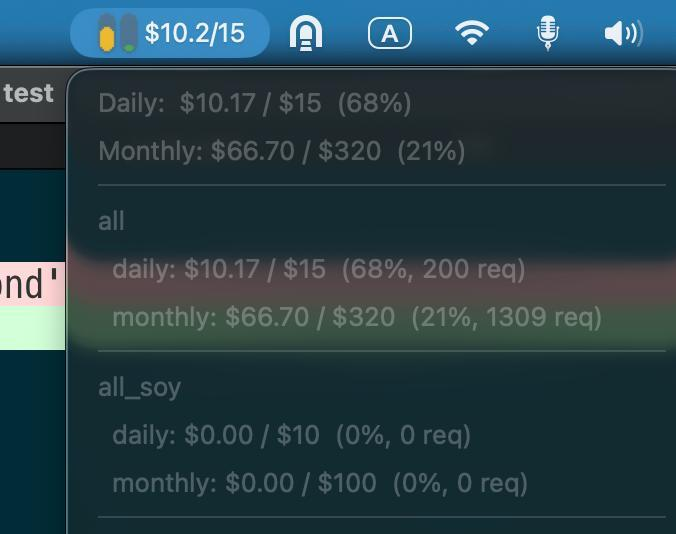

Страница 3
Итерация которую можно прервать
posted on 2026-05-16
Итерация которую можно прервать. С акторами не всё так просто.
Вот вам небольшая демка того, как в системе акторов можно реализовать итерацию таким образом, чтобы её можно было безопасно прервать. Я собираюсь использовать этот подход для того, чтобы организовать работу с код-ассистентом и тулами, которые он запускает. Это нужно сделать так, чтобы код-ассистента можно было прервать в любой момент и сделать это безопасно.
Итерация которую можно прервать
posted on 2026-05-16
Итерация которую можно прервать. С акторами не всё так просто.
Вот вам небольшая демка того, как в системе акторов можно реализовать итерацию таким образом, чтобы её можно было безопасно прервать. Я собираюсь использовать этот подход для того, чтобы организовать работу с код-ассистентом и тулами, которые он запускает. Это нужно сделать так, чтобы код-ассистента можно было прервать в любой момент и сделать это безопасно.
Зачем мне CLOS объекты как состояние акторов в Sento?
posted on 2026-05-11
На этой небольшой демке хочу показать, как я собираюсь использовать CLOS-объекты как состояние акторов в моем кодовом ассистенте Кодабрус. Для реализации акторов я использую библиотеку Sento, а CLOS-объекты в качестве состояния мне нужны для того, чтобы это состояние можно было сериализовать на диск и потом продолжить работу системы с того же места, на котором остановился пользователь.
Демка нового поиска на Ultralisp
posted on 2026-05-05
Демка нового поиска на Ultralisp.org
Не так давно я обновил Ultralisp и сделал там поддержку фреймворка reblocks-ui2, а теперь настало время очередных изменений. Вчера я выкатил обновленный поиск. Если раньше поиск по Ultralisp находил только символы и искал он по докстрингам этих символов, то теперь поиск работает также по ASDF системам и по проектам.
Циклическая зависимость в mgl-pax
posted on 2026-04-19

В эти выходные решал проблемку с отвалившейся named-readtables на UltraLisp.
Named-readtables библиотека довольно много где используется, и то что она стала недоступна - большая проблема.
Жизненные уроки
posted on 2026-04-18
Последнее время я вернулся к работе над своим проектом кодового ассистента. Идея в том, чтобы сделать такого ассистента, которого можно расширять и интерактивно отлаживать в процессе его работы. Конечно, я его делаю на CommonLisp, но многие вещи делаю с помощью другого кодового ассистента - OpenCode. Мой проект, кстати, называется Codabrus. Если интересно, подписывайтесь на обновление этого проекта на GitHub, ставьте ему звездочки, шерьте с друзьями.
Некоторое время назад один из коллег опубликовал свою поделку, которая...
posted on 2026-04-02

Некоторое время назад один из коллег опубликовал свою поделку, которая показывает, сколько осталось квоты на использование нейросетей. Она была написана на Python с отдельной библиотекой для встраивания в тулбар на OS X. Я подумал, что это хороший проектик, чтобы попробовать переписать его на Common Lisp с помощью нейросетей.
Портируем microGPT на Common Lisp с помощью LLM
posted on 2026-03-14
Смотрите чего я навайбкодил: https://github.com/40ants/microgpt
Это порт на Common Lisp скрипта microgpt, который недавно опубликовал Andrej Karpathy.
Как военные могут использовать LLM?
posted on 2026-03-04
По мотивам предыдущего поста про готовность OpenAI убивать людей за пределами США мне стало интересно в каких областях можно применять современный ИИ в войне. Вот с десяток идей который без проблем сгенерила наша отечественная Алиса.
Вся эта история с OpenAI происходит на американском континенте?
posted on 2026-03-04
Кто-нибудь в курсе, что это за шумиха и почему даже некоторые известные личности отказываются от подписок OpenAI?
Created with passion by 40Ants